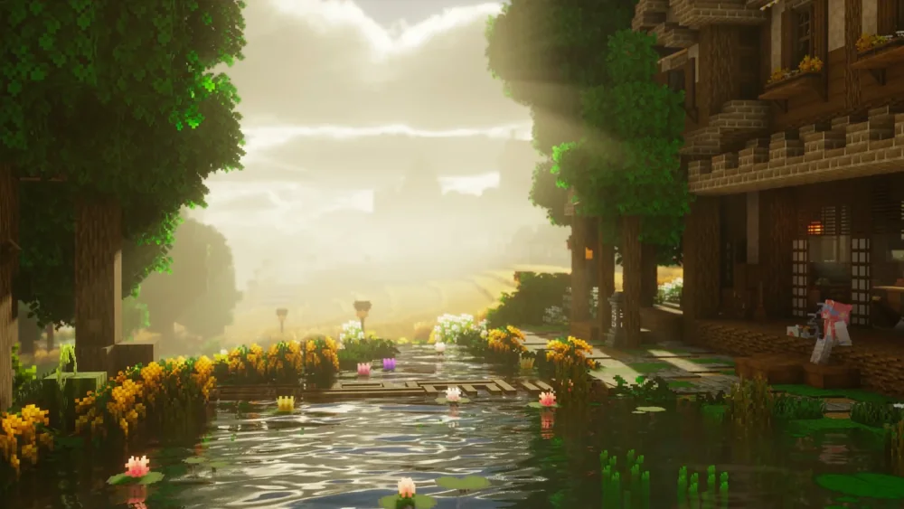
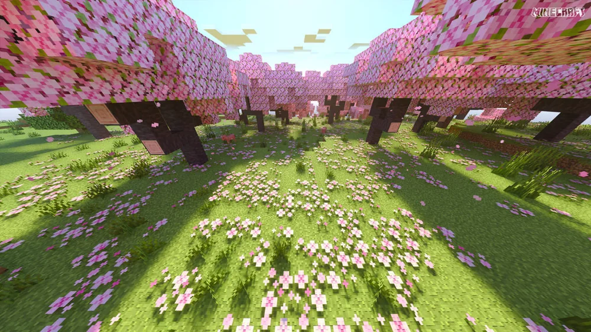
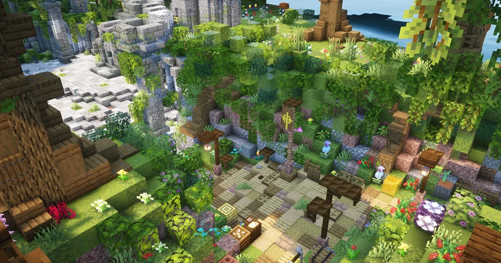

Thay vì chia sẻ IP dài, bạn có một địa chỉ ngắn gọn thuộc mc-vn.top để người chơi sử dụng.
Giới thiệu dịch vụ • Miễn phí • Minecraft vibe
Domain đẹp hơn
cho server Minecraft.
MC-VN cung cấp subdomain Minecraft miễn phí dạng tenban.mc-vn.top. Bạn đăng ký trực tiếp bằng bot Discord với /register, sau đó domain sẽ được cấu hình để trỏ tới server của bạn.
Miễn phí cho Minecraft server
3 / 5 / 10 domain theo Rank
Quản lý bằng Discord bot

MC-VN REGISTER /REGISTER
FREE SERVICE
DOMAIN CỦA BẠN
play.mc-vn.top

JAVA + BEDROCK
server.mc-vn.top

QUẢN LÝ BẰNG BOT
/domain
FREE MINECRAFT DOMAIN◆
REGISTER /REGISTER◆
MC-VN.TOP◆
JAVA + BEDROCK◆
3 / 5 / 10 DOMAINS◆
KOTOBA STUDIO◆
FREE MINECRAFT DOMAIN◆
REGISTER /REGISTER◆
MC-VN.TOP◆
JAVA + BEDROCK◆
3 / 5 / 10 DOMAINS◆
KOTOBA STUDIO◆
FREE DOMAIN SERVICE
MC-VN cấp tên miền Minecraft miễn phí.
MC-VN cấp tên miền Minecraft miễn phí.
Dùng thật, quản lý thật.
Đây không phải trang demo hay bộ mẫu giao diện. MC-VN là dịch vụ cấp subdomain miễn phí để bạn sử dụng cho Minecraft server của mình.
⌁
TRỎ TỚI SERVER
IP hoặc Host
Bot nhận IP hoặc hostname của máy chủ, kèm port khi cần, sau đó kiểm tra thông tin trước khi bạn xác nhận.
123.45.67.89:25570
play.hostcuaban.com
◆
JAVA / BEDROCK
Hỗ trợ port riêng
Java Port có thể tự nhận diện trong nhiều trường hợp. Bedrock / Geyser Port chỉ cần nhập khi server của bạn có hỗ trợ.
✓
QUẢN LÝ
Domain thuộc về bạn
Người đã đăng ký mới có quyền sửa hoặc xóa tên miền. Toàn bộ quản lý thực hiện qua /tenmien hoặc /domain.
BOT GUIDE
Tạo domain bằng bot.
Tạo domain bằng bot.
Nhanh, rõ và dễ quản lý.
Đăng ký tên miền thật được thực hiện trực tiếp bằng bot Discord của Kotoba Studio.
01
BẮT ĐẦU
Dùng lệnh
Dùng lệnh /register
01
Tên miền
Nhập tên ngắn bạn muốn sử dụng.
konomi
↓
02
Địa chỉ máy chủ
Có thể dùng IP hoặc hostname, có hoặc không có port.
123.45.67.89
123.45.67.89:25570
play.hostcuaban.com
play.hostcuaban.com:25570
↓
03
Java Port
Có thể để trống nếu địa chỉ phía trên đã có port hoặc bot tự nhận diện được.
↓
04
Bedrock / Geyser Port
Chỉ nhập nếu server có hỗ trợ Bedrock hoặc Geyser.
THÀNH PHẨM
konomi.mc-vn.top
sẽ trỏ tới Minecraft server của bạn.
02
QUẢN LÝ
/tenmien hoặc /domain
- ◆Xem các tên miền đang sở hữu
- ◆Tạo thêm tên miền
- ◆Sửa IP / Host
- ◆Sửa Java Port
- ◆Sửa Bedrock Port
- ◆Xóa tên miền
- ◆Kiểm tra trạng thái
03
LỆNH NHANH
Nhớ vài lệnh là đủ.
/registerĐăng ký mới/tenmienTrung tâm quản lý/domainTrung tâm quản lý/edit-tenmienSửa tên miền/xoa-tenmienXóa tên miền/help-tenmienXem hướng dẫn
RANK LIMITS
Giới hạn theo Rank.
Giới hạn theo Rank.
Rank cao hơn, tạo được nhiều hơn.
Nếu có nhiều Rank, hệ thống tự sử dụng mức giới hạn cao nhất.
tên miền tối đa
tên miền tối đa
tên miền tối đa
Quyền sở hữu được tách riêng theo người đăng ký.
Mỗi tên miền chỉ thuộc quyền quản lý của người đã đăng ký. Người khác không thể sửa hoặc xóa tên miền của bạn.
WHAT YOU GET
Sau khi đăng ký xong.
Sau khi đăng ký xong.
Bạn có domain dùng cho server thật.
Ví dụ: đăng ký tên konomi thì địa chỉ nhận được là konomi.mc-vn.top và được cấu hình theo server bạn đã khai báo.
MC-VN FREE DOMAIN
ACTIVE
YOUR MINECRAFT ADDRESS
konomi.mc-vn.top
Địa chỉ gọn hơn để dùng cho server và chia sẻ với người chơi.
Không phải mua một domain riêng để có địa chỉ Minecraft ngắn gọn.
Sửa IP/host, Java Port, Bedrock Port, kiểm tra trạng thái hoặc xóa domain.
Member tối đa 3, Rank nâng cấp 5 và Rank cao nhất 10 tên miền.
MINECRAFT VISUALS
Không khí Minecraft.
Không khí Minecraft.
Để website đúng chất game hơn.
Các hình ảnh Minecraft được dùng làm phần trang trí để website có không khí game rõ hơn, không đại diện cho một gói dịch vụ khác.
READY?
Muốn có domain miễn phí
Muốn có domain miễn phí
cho server của bạn?
Vào Kotoba Studio, dùng /register, nhập thông tin server và tạo địa chỉ *.mc-vn.top của bạn.
Tạo tên miền miễn phí